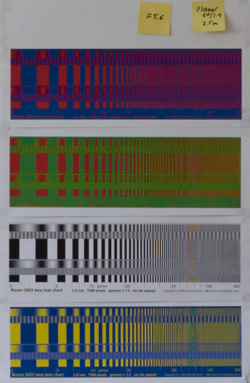
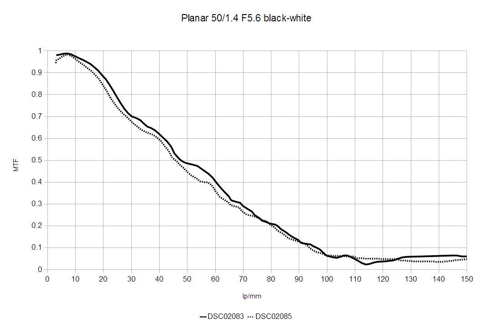
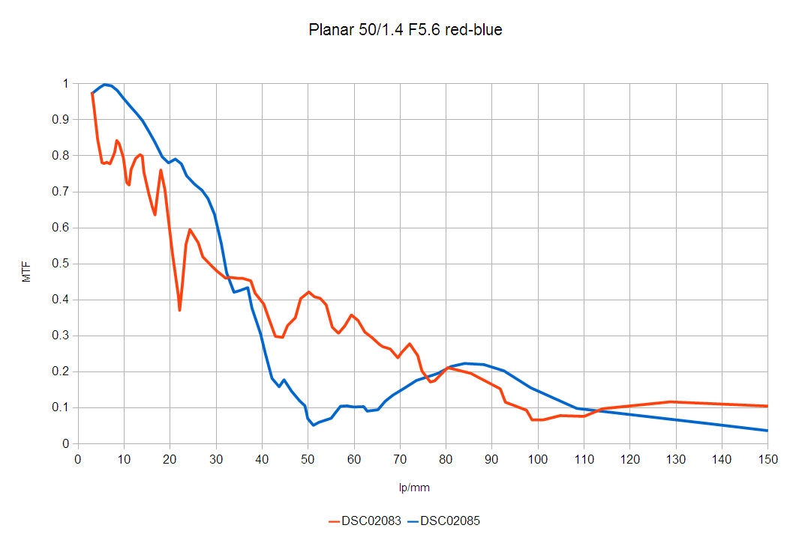
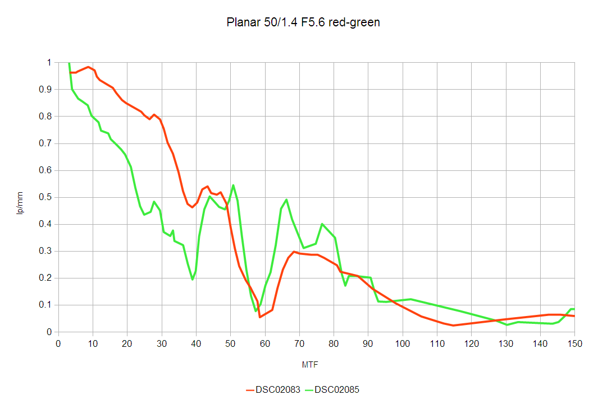
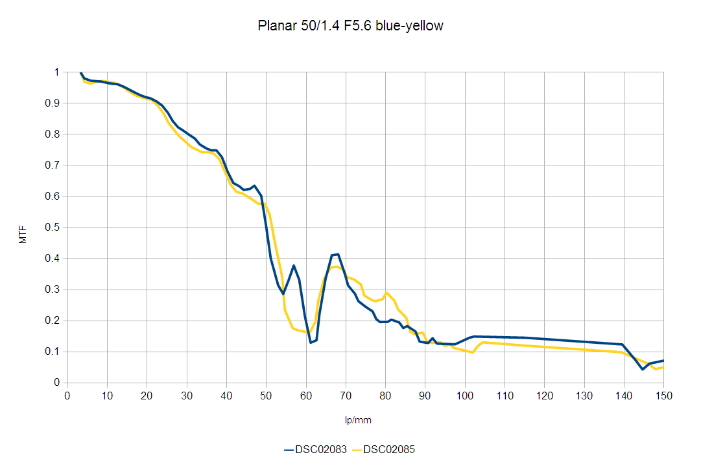

CFA и разрешение
Методика
Использована методика измерений описанная в [1]. При этом мишень фотографировалась с расстояния, обеспечивающего 150-кратное уменьшение, например для 50 мм объектива это 7.5 метров, таким образом шкала мишени соответствует диапазону 3-300 пар линий на мм(lp/mm). Мишень освещалась естественным светом из окна. Камеры устанавливались на штативе, спуск осуществлялся при помощи дистанционного управления. Фокусировка осуществлялась вручную с брекетингом.
Профиль мишени измерялся программой ImageJ, для расчёта MTF была написана программа аналогичная скрипту из [1].
Эталонным объективом был выбран CZ Planar 50/1.4 ZF, поскольку он имеет, по утверждению производителя, предельное разрешение 300 lp/mm. Камера 36 мп Sony A7r.
Съемка велась в RAW, усиление резкости выключено, баланс белого выполнялся вручную, остальные установки по умолжанию, C1Pro версия 9. Выбраны два лучших по резкости снимка.
Общий вид мишени
| Sony A7r, CZ Planar 50/1.4 ZF, F5.6 |
|  |
Черно-белая мира
| Sony A7r, CZ Planar 50/1.4 ZF, F5.6 |
|  |
Разрешение примерно 95 lp/mm, что соответствует 31 мегапикселю.
Красно-синяя мира
| Sony A7r, CZ Planar 50/1.4 ZF, F5.6 |
|  |
Разрешение примерно 50 lp/mm, что соответствует 8.6 мегапикселям.
Красно-зеленая мира
| Sony A7r, CZ Planar 50/1.4 ZF, F5.6 |
|  |
Разрешение примерно 55 lp/mm, что соответствует 10 мегапикселям.
Желто-синяя мира
| Sony A7r, CZ Planar 50/1.4 ZF, F5.6 |
|  |
Разрешение примерно 55-60 lp/mm, что соответствует 10-12 мегапикселям.
Выводы
Надо больше пикселей..
Спасибо.